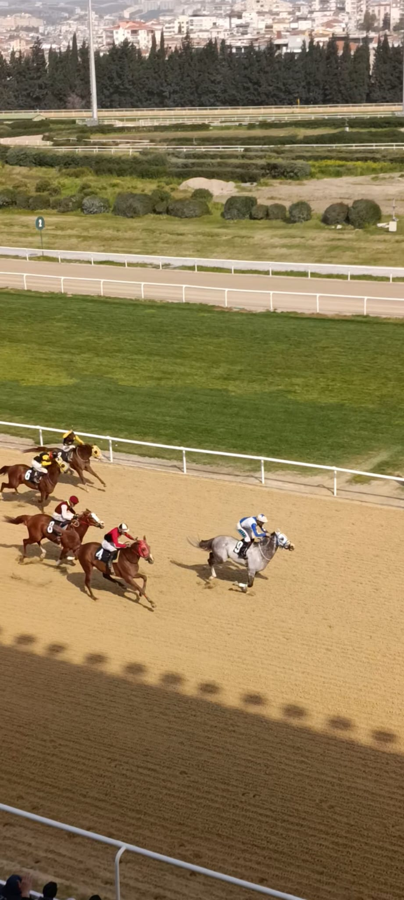
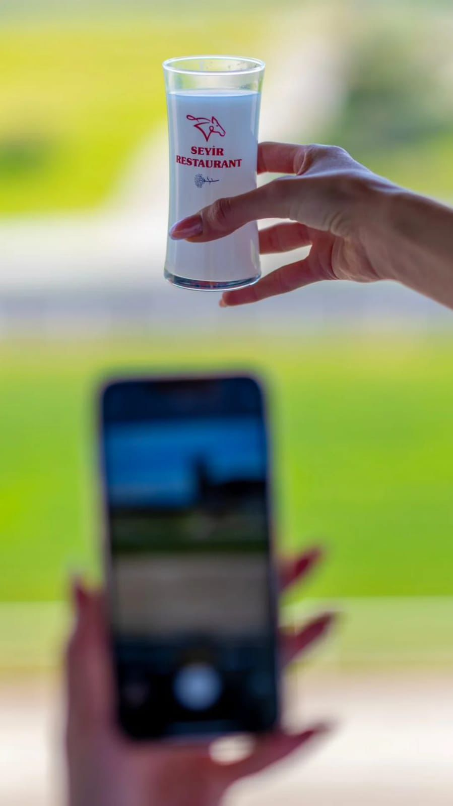
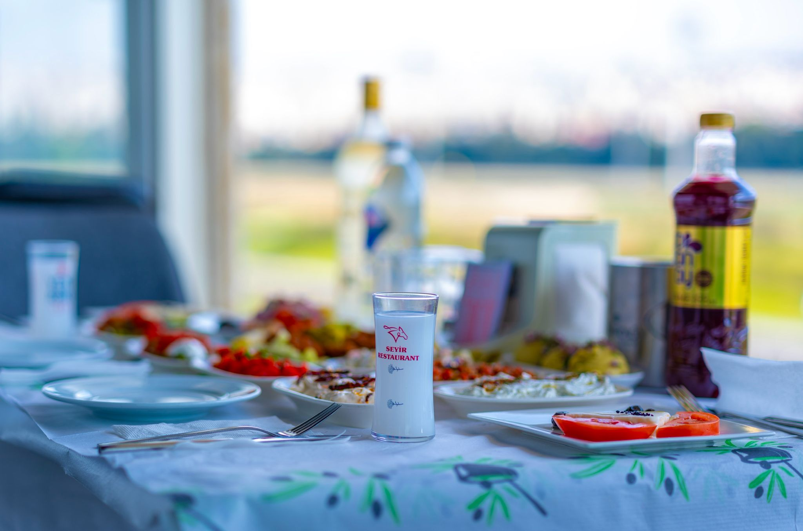
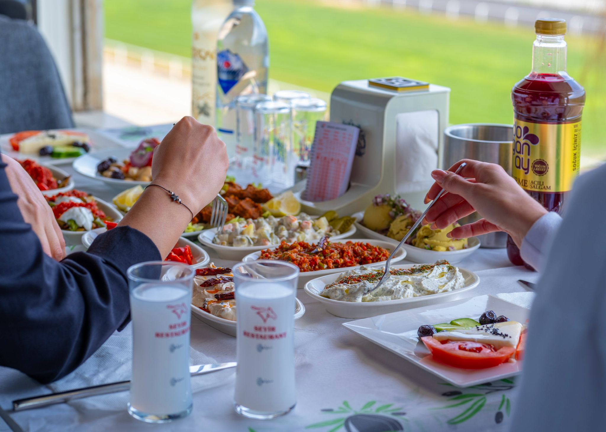
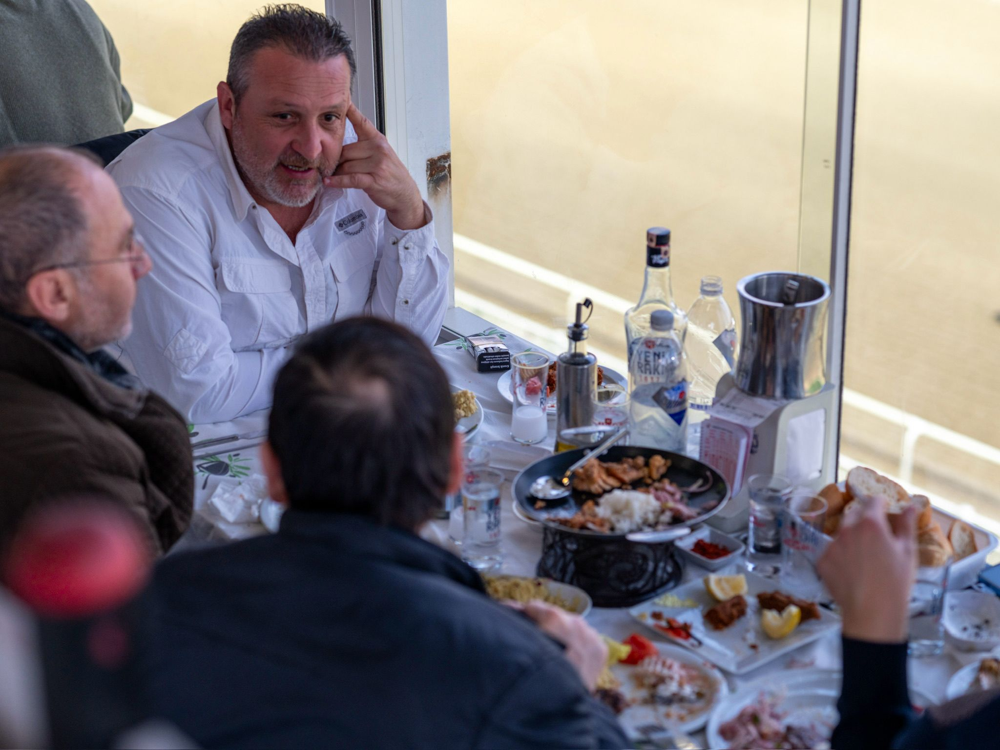
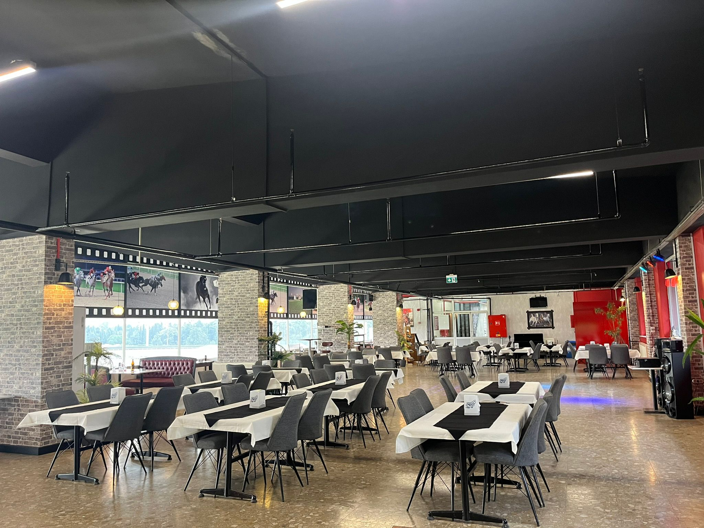
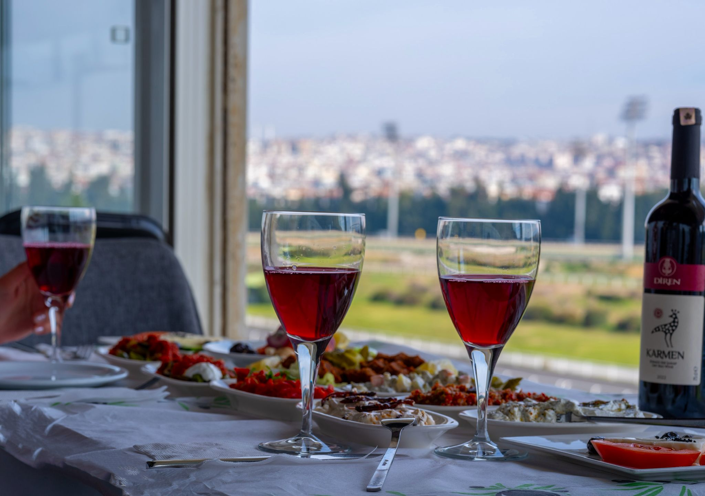
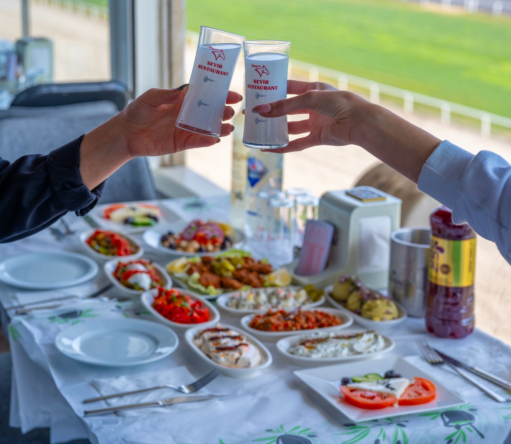

Ege'nin bereketli topraklarından süzülen taze lezzetleri, modern bir gastronomi vizyonuyla Buca'nın kalbine taşıyoruz. Her bir mezemizde İzmir'in enerjisini, her bir anımızda kusursuz bir ambiyansı hissedeceksiniz.


2018 yılından bu yana İzmir'in dokusuna sadık kalarak, misafirlerimize yeni nesil bir meyhane ve restoran deneyimi sunuyoruz. Seyir Restorant, Buca'nın dinamik yapısını Ege'nin köklü lezzet kültürüyle ustaca harmanlıyor.
Mevsiminde toplanan yerel malzemeler, modern tekniklerle hazırlanan seçkin mezeler ve her detayı incelikle tasarlanmış içki koleksiyonumuzla; her masayı bir ziyafete, her akşamı bir hikayeye dönüştürüyoruz.
Doğum günleri, yıl dönümleri veya kurumsal etkinlikleriniz için özel masanızı ayırtın. Size özel menü ve dekorasyon hazırlıyoruz.
Hemen Rezervasyon YapSeyir Restorant'ın eşsiz ambiyansından kareler






Değerli misafirlerimizin Seyir deneyimleri
"Mezeler gerçekten İzmir ruhunu yansıtıyor. Buca'da böyle nezih ve kaliteli bir yer bulmak çok zor. Hipodrom tarafına her geldiğimizde mutlaka uğruyoruz. Herkese tavsiye ederim."
"Hizmet kalitesi ve garsonların ilgisi mükemmel. Akşam yemeği için geldik, mezelerin tazeliği ve lezzeti bizi şaşırttı. İzmir'in en iyi ağırlayan mekanlarından biri."
"Ambiyans çok huzurlu, müzikler tam dozunda. Arkadaş grubumuzla harika bir gece geçirdik. Şehrin gürültüsünden kaçıp kaliteli lezzetler arayanlar için İzmir'deki tek adres."
Yıllık Tecrübe
Mutlu Misafir
Ortalama Puan